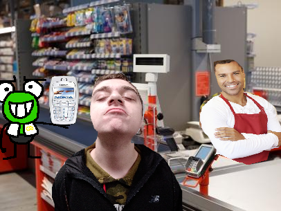
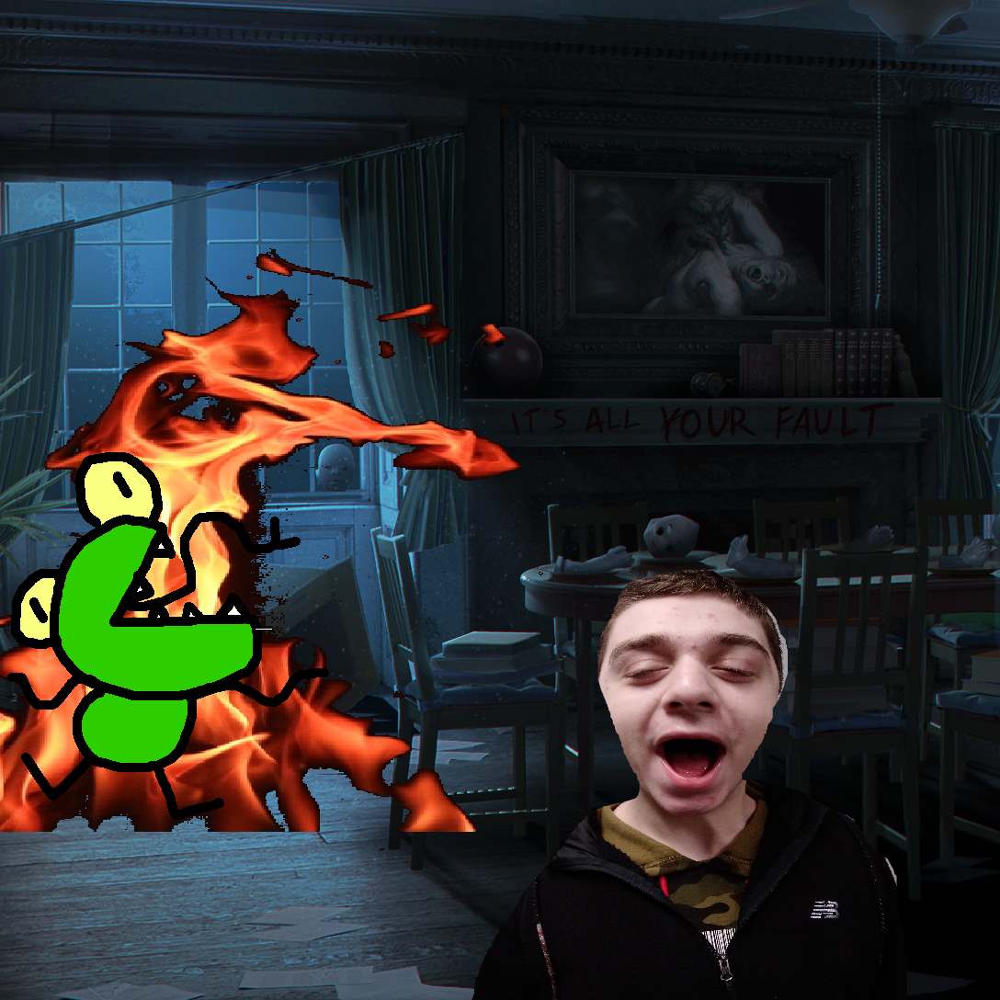

Page 1
Today I regret to inform you of the passing of a dear friend of mine. Through my grief I must tell the sad tale of how this happened to you as a practice of mourning. This is the story of the epic fight between Kervin from the Warriors and Nadeem Sassin.
Nadeem and I have been good friends for many, many years. I can’t even remember the time before I knew him. I can’t believe that I had to lose him. On a day like many others, Nadeem was engaging in the necessities of life. He woke up, ate a hearty breakfast: an average storebrand cereal of no nutritional value, and went on a stroll through town to purchase groceries and run errands. When he went to pay for his produce: a loaf of bread, some bananas, ground beef, and a bag of gummy worms as a treat for a good day, he noticed something unnerving. If he pays for these groceries, he will not have enough money to pay his rent on friday.
Beside him, he found something rather intriguing. Kervin from the Warriors was standing there; on his phone; wearing a gucci-brand jacket. “Wow”, Nadeem thought. “This Kervin (from the Warriors) guy is balling out. I’m sure that he wouldn’t notice or mind if I snatched a measly ten dollars.” Nadeem acted. While Kervin was grabbing a small bottle of pills off the shelf by the conveyor, and the cashier was looking away, Nadeem Sassin swiped the money straight from Kervins conveniently wide-open wallet. Things seemed fine after that. Nadeem purchased his goods, completed his errands, and went home to spend the rest of his day in relaxation.
Late that night, Nadeem was for some reason still awake. On his computer he was scrolling Amazon: a bad habit for someone like him in severe debt. He stumbled upon a rare figurine of a golden CCGameing: the last one needed to complete his collection. This figure held a spear in one hand and a Nintendo 3DS XL in the other. This spear looked dangerously sharp which only made Nadeem want it more; it filled his strange desire for sharp objects that you wouldn’t know without him telling you. As he went to get his credit card, he felt it in his pocket. This was strange, as Nadeem does not like to take his credit card with him anywhere in case he loses it. He also simply prefers paying in cash to get a more satisfactory feeling in his money. Regardless, he ordered the figure. It seemed that it would arrive shortly due to the effects of his Premium Amazon Year 2048 Special Edition Early Access Limited-Time Purchase 50% Off 2 for 5 Cereal Box Prize Fast Shipping Subscription.
Just then, he heard a loud creaking noise coming from his living room. He walked in and the fire had gone out. The chimney seemed sort of tampered with in general. Had someone broken in? He saw an ominous glow in the next room over. When he entered he saw Kervin (still from the Warriors), on fire, running in circles, only fanning the flame to the rest of the abode. Nadeem rushed for his sink. He filled a frying pan with water as it was the closest thing he could obtain in this desperate time. He sprinted back into the living room to put out the fire. In his adrenaline, he accidentally hurled the pan itself at Kervin alongside the water.
“YEOWCH!”, Kervin exclaimed. “What was that for?” Nadeem felt sorry for giving Kervin a concussion, but he was more worried as to why Kervin was in his house. He knew Kervin wouldn’t have noticed the ten stolen dollars, so why did he break in? Nadeem was furious. “I should be asking YOU the same question, Kervin!”, Nadeem yelled. “Why are you here?” “Nadeem, you were the one who stole my credit card, and now I’m pissed off at you!”, Kervin replied. Nadeem Sassin was puzzled by this, he had only stolen ten dollars. Then, Nadeem’s face went a ghostly pale. He reached into his pocket only to realize that his credit card was not there, rather, it was Kervin’s. Nadeem gasped. He must have accidentally pocketed it when he had spare change. Nadeem tried to return it but Kervin wasn’t just gonna leave. Kervin was enraged. Nadeem knew this meant business, and that there was no backing down now.